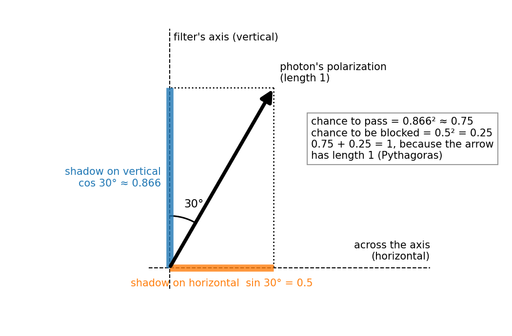
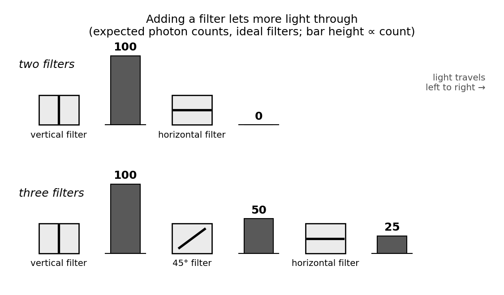

Quantum mechanics is the basic physics of matter and light, the theory underneath chemistry and much of modern technology. At its heart it rewrites two everyday ideas: what it means for something to have a property, and what happens when you measure it. One experiment shows both; in it, adding a filter lets more light through.
First, the everyday part. Bright light behaves like a wave that wiggles sideways as it travels, as a shaken rope does. Unlike a rope wave, though, light needs no rope or any other material, and its wiggle is not anything moving from side to side. Instead, the light's electric field wiggles: it would push an electric charge placed in the light sideways, this way and that, while the light itself travels straight ahead. When the wiggle goes back and forth along one line, the light is polarized along that line. A polarizing filter, like those in polarized sunglasses, has a built-in direction called its axis. An ideal filter passes all light polarized along its axis, blocks all light polarized straight across it, and passes part of any slanted light. Good laboratory filters come close, and from here on all filters are assumed ideal. With bright light, all of this is ordinary wave physics.
The quantum part shows up in very dim light. Light is detected in whole lumps called photons, and very dim light delivers them almost always one at a time. A photon polarized at a slant to a filter's axis can't partly get through: it gets through whole or not at all, and nobody can predict which. Quantum mechanics predicts only the chances, and here its rules fit in one picture:
- State: a photon polarized along a line is described by an arrow of length 1 pointing along that line.
- Question: a filter asks the photon a two-answer question: "along my axis (get through), or straight across it (blocked)?" Nobody needs to watch; the filter does the asking.
- Chance = shadow²: the chance of each answer is the square of the arrow's shadow on that answer's direction. The shadow is how far the arrow reaches along that direction, like a tilted stick's shadow on the ground when the sun is straight overhead.
- Update: a photon that gets through comes out polarized along the filter's axis, whatever its direction before. So a photon that has passed a vertical filter is now vertical, and gets through a second vertical filter for certain.
Take a photon polarized at 30° from a vertical filter's axis. Its shadow on the vertical is about 0.866, and squaring it gives 0.75: a 75% chance to get through. Its shadow on the horizontal is 0.5, and squaring that gives 0.25: a 25% chance to be blocked. At every angle the two chances add up to 100%, because the arrow has length 1: by Pythagoras' theorem, the two squared shadows add up to the arrow's length squared.

Here is the payoff. Send 100 photons that have just passed a vertical filter toward a horizontal one. A vertical arrow has no shadow on the horizontal, so none get through. Now slip a 45° filter in between. Roughly half, about 50, get through it, each now polarized at 45°; roughly half of those, about 25, then get through the horizontal filter. Adding a filter let more light through! A mere sieve, sorting photons by some fixed property and leaving the ones that pass unchanged, could never do that: an extra sieve can only remove photons. So the filter's question changes the photons that get through, resetting each arrow to the filter's axis. Measuring, here, is not just looking. (Bright light does the same, as ordinary wave physics predicts; the quantum part is that it happens one photon at a time, by chance.)

A 45° photon is often called "a superposition of vertical and horizontal". Is each one secretly vertical or horizontal, and we just don't know which? Then a 45° filter would pass only about half of them, since vertical and horizontal photons each get through it half the time. In fact, it passes every one. Nor is the photon "both at once": its state is one arrow, pointing one way. "Superposition of vertical and horizontal" only means that this arrow casts a shadow on both. Likewise, a vertical photon is a superposition of the two diagonals, 45° and 135°.
So a 45° photon's answer to a 45° filter is certain, but its answer to a vertical filter is 50/50. That is how quantum mechanics rewrites "having a property": an answer is certain only when the arrow lies right along that answer's direction. No arrow lies along vertical or horizontal and also along a diagonal, so no way of preparing a photon makes its answers to both a vertical and a 45° filter certain. This is a simple case of the kind of trade-off behind Heisenberg's uncertainty principle, which concerns a particle's position and momentum (roughly, mass times velocity).
Zooming out, quantum mechanics uses the same four ideas far beyond photons:
- States: a system prepared as completely as quantum mechanics allows is described by an arrow of length 1. (Not every system has an arrow of its own; more on this at the end.) Most systems need arrows with many more directions to point in, and of a richer kind than the ones drawn here. Light whose wiggle goes round in circles already needs the richer kind, though not more directions.
- Questions: each kind of measurement has its own set of possible answers.
- Shadows: chances are squared shadows.
- Updates: after an ideal measurement that leaves the system intact, its arrow points along the answer it gave.
Left isolated, a system's arrow changes, if at all, gradually and predictably, by a rule called the Schrödinger equation; chance comes in with the answers to questions.
A photon's polarization is one example of a qubit, the basic unit of information in quantum computing. The same rules underlie how electrons behave in atoms and solids, and through them chemistry, lasers and transistors. The theory's predictions have been confirmed in a vast range of experiments, some with extraordinary precision; what the arrow "really is", and what, if anything, physically happens when it updates, are still debated.
A natural next step is entanglement: two photons can share a single arrow, in a way that leaves neither photon an arrow of its own.
Check yourself: In the three-filter setup, how many of the 100 photons get through the last filter if you turn the middle filter to vertical, the same as the first?